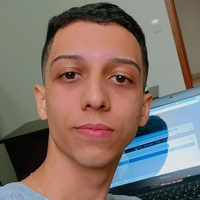

- Home
- >
- Currículo
Currículo
Dados Pessoais

Nome:
Yuri Gabriel de Freitas
Data de Nascimento:
22/07/2002
Residência:
Orlândia - SP, Brasil
Idiomas:
Português (Nativo)
Inglês - Básico
Espanhol - Básico
Sobre Mim
Olá, meu nome é Yuri, possuo um perfil autodidata, para mim é muito satisfatório aprender uma nova linguagem, framework, saber como as coisas funcionam por trás do visual. Sou apaixonado por tecnologia desde o meu primeiro encontro com ela no ensino médio, onde conseguimos concluir o TCC, juntamente com um curso técnico de Desenvolvimento de Sistemas, no período noturno.
Sou estudante do curso Sistemas de Informação, na Universidade de Franca(Unifran).
Já fui atrás de bastante conteúdo gratúito pela rede, mas, atualmente meus estudos se baseiam em acadêmico, OneBitCode(Programador FullStack JavaScript), Udemy, YouTube, etc.
Educação
01/2022 até 01/2025
Ensino superior em Sistemas de Informação - Noturno(Bacharel) UNIFRAN.
2018 até 2020
Ensino Técnico Integrado ao Médio (ETIM) -
ETEC. Prof. Alcídio de Souza Prado
2018 até 2019
Técnico em Desenvolvimento de Sistemas -
ETEC. Prof. Alcídio de Souza Prado
Qualidades
Perfil
Fácil aprendizado | Lógica de programação |
Paciente | Comunicativo | Autodidata
Skills
Html | Css(Bootstrap, Sass) | PHP |
JavaScript(ReactJS) | MySQL
Experiência de Trabalho
02/2022 até o momento (Atualizado em 07/2022)
Analista de suporte computacional
Cash consultoria em negócios - Orlândia/SP
Contato
yurifreits7@gmail.com
← Voltar ao início⠀